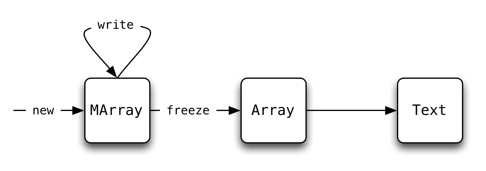

Pointers Gone Wild
A large part of the allure of Haskell is its elegant, high-level ADTs that ensure1 that programs won't be plagued by problems like the infamous SSL heartbleed bug.
However, another part of Haskell's charm is that when you really really need to, you can drop down to low-level pointer twiddling to squeeze the most performance out of your machine. But of course, that opens the door to the #heartbleeds.
Can we have have our cake and eat it too?
Can we twiddle pointers and still get the nice safety assurances of high-level types?
To understand the potential for potential bleeding,
let's study the popular text library for efficient
text processing. The library provides the high-level
API Haskellers have come to expect while using stream
fusion and byte arrays under the hood to guarantee
high performance.
Suppose we wanted to get the ith Char of a Text,
we could write a function2
39: charAt (Text a o l) i = word2char $ unsafeIndex a (o+i) 40: where 41: word2char = chr . fromIntegral
which extracts the underlying array a, indexes into it starting
at the offset o and casts the Word16 to a Char, using
functions exported by text.
Let's try this out in GHCi.
50: ghci> let t = pack ['d','o','g'] 51: ghci> charAt t 0 52: 'd' 53: ghci> charAt t 2 54: 'g'
Looks good so far, what happens if we keep going?
58: ghci> charAt t 3 59: '\NUL' 60: ghci> charAt t 100 61: '\8745'
Oh dear, not only did we not get any sort of exception from Haskell,
we weren't even stopped by the OS with a segfault. This is quite
dangerous since we have no idea what sort of data we just read!
To be fair to the library's authors, we did use a function that
was clearly branded unsafe, but these functions, while not
intended for clients, pervade the implementation of the library.
Wouldn't it be nice to have these last two calls rejected at compile time?
In this post we'll see exactly how prevent invalid memory accesses like this with LiquidHaskell.
80: {-# LANGUAGE BangPatterns, MagicHash, Rank2Types, RecordWildCards, UnboxedTuples, ExistentialQuantification #-} 82: {-@ LIQUID "--no-termination" @-} 83: module TextInternal (test, goodMain, badMain, charAt, charAt') where 84: 85: import qualified Control.Exception as Ex 86: import Control.Applicative ((<$>)) 87: import Control.Monad (when) 88: import Control.Monad.ST.Unsafe (unsafeIOToST) 89: import Data.Bits (shiftR, xor, (.&.)) 90: import Data.Char 91: import Foreign.C.Types (CSize) 92: import GHC.Base (Int(..), ByteArray#, MutableByteArray#, newByteArray#, 93: writeWord16Array#, indexWord16Array#, unsafeCoerce#, ord, 94: iShiftL#) 95: import GHC.ST (ST(..), runST) 96: import GHC.Word (Word16(..)) 97: 98: import qualified Data.Text.Lazy.IO as TIO 99: import qualified Data.Text as T 100: import qualified Data.Text.Internal as T 101: 102: import Language.Haskell.Liquid.Prelude 103: 104: {-@ aLen :: a:Array -> {v:Nat | v = (aLen a)} @-} 105: 106: {-@ maLen :: a:MArray s -> {v:Nat | v = (maLen a)} @-} 107: 108: new :: forall s. Int -> ST s (MArray s) 109: unsafeWrite :: MArray s -> Int -> Word16 -> ST s () 110: unsafeFreeze :: MArray s -> ST s Array 111: unsafeIndex :: Array -> Int -> Word16 112: copyM :: MArray s -- ^ Destination 113: -> Int -- ^ Destination offset 114: -> MArray s -- ^ Source 115: -> Int -- ^ Source offset 116: -> Int -- ^ Count 117: -> ST s () 118: 119: {-@ memcpyM :: MutableByteArray# s -> CSize -> MutableByteArray# s -> CSize -> CSize -> IO () @-} 120: memcpyM :: MutableByteArray# s -> CSize -> MutableByteArray# s -> CSize -> CSize -> IO () 121: forall a. (MutableByteArray# a) -> CSize -> (MutableByteArray# a) -> CSize -> CSize -> (IO ())memcpyM = forall a. aundefined 122: 123: -------------------------------------------------------------------------------- 124: --- Helper Code 125: -------------------------------------------------------------------------------- 126: {-@ shiftL :: i:Nat -> n:Nat -> {v:Nat | ((n = 1) => (v = (i * 2)))} @-} 127: shiftL :: Int -> Int -> Int 128: x1:{v : Int | (v >= 0)} -> x2:{v : Int | (v >= 0)} -> {v : Int | ((x2 == 1) => (v == (x1 * 2))) && (v >= 0)}shiftL = forall a. aundefined -- (I# x#) (I# i#) = I# (x# `iShiftL#` i#) 129: 130: pack :: String -> Text 131: x1:[Char] -> {v : Text | ((tLen v) == (len x1))}pack = forall a. aundefined -- not "actually" using 132: 133: forall a. {v : Bool | ((Prop v))} -> a -> aassert {v : Bool | ((Prop v))}b aa = Bool -> a -> aEx.assert {x3 : Bool | ((Prop x3)) && (x3 == b)}b {VV : a | (VV == a)}a 134: 135: 136: data Text = Text Array Int Int 137: 138: {-@ tLength :: t:Text -> {v:_ | v = (tLen t)} @-} 139: x1:Text -> {v : Int | (v == (tLen x1))}tLength (Text _ _ n) = {x3 : Int | (x3 == n) && (x3 >= 0)}n
The Text Lifecycle¶
text splits the reading and writing array operations between two
types of arrays, immutable Arrays and mutable MArrays. This leads to
the following general lifecycle:

The main four array operations we care about are:
- creating an
MArray, - writing into an
MArray, - freezing an
MArrayinto anArray, and - reading from an
Array.
Creating an MArray¶
The (mutable) MArray is a thin wrapper around GHC's primitive
MutableByteArray#, additionally carrying the number of Word16s it
can store.
167: data MArray s = MArray { forall a. (MArray a) -> (MutableByteArray# a)maBA :: MutableByteArray# s 168: , forall a. x1:(MArray a) -> {v : Int | (v == (maLen x1)) && (v >= 0)}maLen :: !Int 169: }
It doesn't make any sense to have a negative length, so we refine
the data definition to require that maLen be non-negative.
176: {-@ data MArray s = MArray { maBA :: MutableByteArray# s 177: , maLen :: Nat 178: } 179: @-}
As an added bonus, the above specification generates field-accessor measures that we will use inside the refined types:
184: {-@ measure maLen :: MArray s -> Int 185: maLen (MArray a l) = l 186: @-}
We can use these accessor measures to define MArrays of size N:
192: {-@ type MArrayN a N = {v:MArray a | (maLen v) = N} @-}
and we can use the above alias, to write a type that tracks the size
of an MArray at the point where it is created:
199: {-@ new :: forall s. n:Nat -> ST s (MArrayN s n) @-} 200: forall a. x1:{v : Int | (v >= 0)} -> (ST a {v : (MArray a) | ((maLen v) == x1)})new {v : Int | (v >= 0)}n 201: | {x3 : Int | (x3 == n) && (x3 >= 0)}n x1:Int -> x2:Int -> {x2 : Bool | (((Prop x2)) <=> (x1 < x2))}< {x2 : Int | (x2 == (0 : int))}0 x1:Bool -> x2:Bool -> {x2 : Bool | (((Prop x2)) <=> (((Prop x1)) || ((Prop x2))))}|| {x3 : Int | (x3 == n) && (x3 >= 0)}n Int -> Int -> Int.&. {x2 : Int | (x2 == highBit)}highBit x1:Int -> x2:Int -> {x2 : Bool | (((Prop x2)) <=> (x1 /= x2))}/= {x2 : Int | (x2 == (0 : int))}0 = [Char] -> {x1 : (ST a {x2 : (MArray a) | false}) | false}error {x2 : [Char] | ((len x2) >= 0)}"size overflow" 202: | otherwise = ((State# a) -> ((State# a), {x7 : (MArray a) | ((maLen x7) == n)})) -> (ST a {x3 : (MArray a) | ((maLen x3) == n)})ST (((State# a) -> ((State# a), {x17 : (MArray a) | ((maLen x17) == n)})) -> (ST a {x12 : (MArray a) | ((maLen x12) == n)})) -> ((State# a) -> ((State# a), {x17 : (MArray a) | ((maLen x17) == n)})) -> (ST a {x12 : (MArray a) | ((maLen x12) == n)})$ \(State# a)s1# -> 203: case Int# -> (State# a) -> ((State# a), (MutableByteArray# a))newByteArray# {x2 : Int# | (x2 == len)}len# {x2 : (State# a) | (x2 == s1)}s1# of 204: (# s2#, marr# #) -> forall a b. a -> b -> (a, b)(# {x2 : (State# a) | (x2 == s2)}s2#, x1:(MutableByteArray# a) -> x2:{x5 : Int | (x5 >= 0)} -> {x3 : (MArray a) | ((maBA x3) == x1) && ((maLen x3) == x2)}MArray {x2 : (MutableByteArray# a) | (x2 == marr)}marr# {x3 : Int | (x3 == n) && (x3 >= 0)}n #) 205: where !(I# len#) = x1:{x11 : Int | (x11 == n) && (x11 >= 0)} -> {x8 : Int | ((x1 == 1) => (x8 == (x1 * 2))) && ((x1 == 1) => (x8 == (n * 2))) && ((n == 1) => (x8 == (x1 * 2))) && ((n == 1) => (x8 == (n * 2))) && (x8 >= 0) && (x8 >= x1) && (x8 >= n)}bytesInArray {x3 : Int | (x3 == n) && (x3 >= 0)}n 206: InthighBit = IntmaxBound Int -> Int -> Int`xor` (IntmaxBound Int -> Int -> Int`shiftR` {x2 : Int | (x2 == (1 : int))}1) 207: n:{VV : Int | (VV == n) && (VV >= 0)} -> {VV : Int | ((n == 1) => (VV == (n * 2))) && ((n == 1) => (VV == (n * 2))) && ((n == 1) => (VV == (n * 2))) && ((n == 1) => (VV == (n * 2))) && (VV >= 0) && (VV >= n) && (VV >= n)}bytesInArray {VV : Int | (VV == n) && (VV >= 0)}n = {x4 : Int | (x4 == n) && (x4 == n) && (x4 >= 0)}n x1:{x7 : Int | (x7 >= 0)} -> x2:{x5 : Int | (x5 >= 0)} -> {x3 : Int | ((x2 == 1) => (x3 == (x1 * 2))) && (x3 >= 0)}`shiftL` {x2 : Int | (x2 == (1 : int))}1
new n is an ST action that produces an MArray s with n slots each
of which is 2 bytes (as internally text manipulates Word16s).
The verification process here is quite simple; LH recognizes that
the n used to construct the returned array (MArray marr# n)
the same n passed to new.
Writing into an MArray¶
Once we have created an MArray, we'll want to write our data into it.
A Nat is a valid index into an MArray if it is strictly less than
the size of the array.
226: {-@ type MAValidI MA = {v:Nat | v < (maLen MA)} @-}
We use this valid index alias to refine the type of unsafeWrite
232: {-@ unsafeWrite :: ma:MArray s -> MAValidI ma -> Word16 -> ST s () @-} 233: forall a. x1:(MArray a) -> {v : Int | (v >= 0) && (v < (maLen x1))} -> Word16 -> (ST a ())unsafeWrite MArray{..} {v : Int | (v >= 0)}i@(I# i#) (W16# e#) 234: | {x5 : Int | (x5 == i) && (x5 == i) && (x5 == (i : int)) && (x5 >= 0)}i x1:Int -> x2:Int -> {x2 : Bool | (((Prop x2)) <=> (x1 < x2))}< {x2 : Int | (x2 == (0 : int))}0 x1:Bool -> x2:Bool -> {x2 : Bool | (((Prop x2)) <=> (((Prop x1)) || ((Prop x2))))}|| {x5 : Int | (x5 == i) && (x5 == i) && (x5 == (i : int)) && (x5 >= 0)}i x1:Int -> x2:Int -> {x2 : Bool | (((Prop x2)) <=> (x1 >= x2))}>= {x2 : Int | (x2 >= 0)}maLen = {x6 : Bool | ((Prop x6))} -> (ST a ()) -> (ST a ())assert {x3 : Bool | (not (((Prop x3)))) && (x3 == GHC.Types.False)}False ((ST a ()) -> (ST a ())) -> (ST a ()) -> (ST a ())$ [Char] -> (ST a ())error {x2 : [Char] | ((len x2) >= 0)}"out of bounds" 235: | otherwise = ((State# a) -> ((State# a), ())) -> (ST a ())ST (((State# a) -> ((State# a), ())) -> (ST a ())) -> ((State# a) -> ((State# a), ())) -> (ST a ())$ \(State# a)s1# -> 236: case (MutableByteArray# a) -> Int# -> Word# -> (State# a) -> (State# a)writeWord16Array# (MutableByteArray# a)maBA {x2 : Int# | (x2 == i)}i# {x2 : Word# | (x2 == e)}e# {x2 : (State# a) | (x2 == s1)}s1# of 237: s2# -> forall a b. a -> b -> (a, b)(# (State# a)s2#, {x2 : () | (x2 == GHC.Tuple.())}() #)
Note that, when compiled with appropriate options, the implementation of
text checks the bounds at run-time. However, LiquidHaskell can statically
prove that the error branch is unreachable, i.e. the assert cannot fail
(as long as the inputs adhere to the given specification) by giving assert
the type:
247: {-@ assert assert :: {v:Bool | (Prop v)} -> a -> a @-}
Bulk Writing into an MArray¶
So now we can write individual Word16s into an array, but maybe we
have a whole bunch of text we want to dump into the array. Remember,
text is supposed to be fast! C has memcpy for cases like this but
it's notoriously unsafe; with the right type however, we can regain safety.
text provides a wrapper around memcpy to copy n elements from
one MArray to another.
copyM requires two MArrays and valid offsets into each -- note
that a valid offset is not necessarily a valid index, it may
be one element out-of-bounds
265: {-@ type MAValidO MA = {v:Nat | v <= (maLen MA)} @-}
-- and a count of elements to copy.
The count must represent a valid region in each MArray, in
other words offset + count <= length must hold for each array.
273: {-@ copyM :: dest:MArray s 274: -> didx:MAValidO dest 275: -> src:MArray s 276: -> sidx:MAValidO src 277: -> {v:Nat | (((didx + v) <= (maLen dest)) && ((sidx + v) <= (maLen src)))} 279: -> ST s () 280: @-} 281: forall a. x1:(MArray a) -> x2:{v : Int | (v >= 0) && (v <= (maLen x1))} -> x3:(MArray a) -> x4:{v : Int | (v >= 0) && (v <= (maLen x3))} -> {v : Int | (v >= 0) && ((x2 + v) <= (maLen x1)) && ((x4 + v) <= (maLen x3))} -> (ST a ())copyM (MArray a)dest {v : Int | (v >= 0) && (v <= (maLen dest))}didx (MArray a)src {v : Int | (v >= 0) && (v <= (maLen src))}sidx {v : Int | (v >= 0) && ((didx + v) <= (maLen dest)) && ((sidx + v) <= (maLen src))}count 282: | {x5 : Int | (x5 == count) && (x5 >= 0) && ((didx + x5) <= (maLen dest)) && ((sidx + x5) <= (maLen src))}count x1:Int -> x2:Int -> {x2 : Bool | (((Prop x2)) <=> (x1 <= x2))}<= {x2 : Int | (x2 == (0 : int))}0 = () -> (ST a ())return {x2 : () | (x2 == GHC.Tuple.())}() 283: | otherwise = 284: {x6 : Bool | ((Prop x6))} -> (ST a ()) -> (ST a ())assert ({x4 : Int | (x4 == sidx) && (x4 >= 0) && (x4 <= (maLen src))}sidx x1:Int -> x2:Int -> {x4 : Int | (x4 == (x1 + x2))}+ {x5 : Int | (x5 == count) && (x5 >= 0) && ((didx + x5) <= (maLen dest)) && ((sidx + x5) <= (maLen src))}count x1:Int -> x2:Int -> {x2 : Bool | (((Prop x2)) <=> (x1 <= x2))}<= x1:(MArray a) -> {x3 : Int | (x3 == (maLen x1)) && (x3 >= 0)}maLen {x2 : (MArray a) | (x2 == src)}src) ((ST a ()) -> (ST a ())) -> ((IO ()) -> (ST a ())) -> (IO ()) -> exists [(ST a ())].(ST a ()). 285: {x6 : Bool | ((Prop x6))} -> (ST a ()) -> (ST a ())assert ({x4 : Int | (x4 == didx) && (x4 >= 0) && (x4 <= (maLen dest))}didx x1:Int -> x2:Int -> {x4 : Int | (x4 == (x1 + x2))}+ {x5 : Int | (x5 == count) && (x5 >= 0) && ((didx + x5) <= (maLen dest)) && ((sidx + x5) <= (maLen src))}count x1:Int -> x2:Int -> {x2 : Bool | (((Prop x2)) <=> (x1 <= x2))}<= x1:(MArray a) -> {x3 : Int | (x3 == (maLen x1)) && (x3 >= 0)}maLen {x2 : (MArray a) | (x2 == dest)}dest) ((ST a ()) -> (ST a ())) -> ((IO ()) -> (ST a ())) -> (IO ()) -> exists [(ST a ())].(ST a ()). 286: (IO ()) -> (ST a ())unsafeIOToST ((IO ()) -> (ST a ())) -> (IO ()) -> (ST a ())$ (MutableByteArray# a) -> CSize -> (MutableByteArray# a) -> CSize -> CSize -> (IO ())memcpyM ((MArray a) -> (MutableByteArray# a)maBA {x2 : (MArray a) | (x2 == dest)}dest) (x1:Int -> {x2 : CSize | (x2 == x1)}fromIntegral {x4 : Int | (x4 == didx) && (x4 >= 0) && (x4 <= (maLen dest))}didx) 287: ((MArray a) -> (MutableByteArray# a)maBA {x2 : (MArray a) | (x2 == src)}src) (x1:Int -> {x2 : CSize | (x2 == x1)}fromIntegral {x4 : Int | (x4 == sidx) && (x4 >= 0) && (x4 <= (maLen src))}sidx) 288: (x1:Int -> {x2 : CSize | (x2 == x1)}fromIntegral {x5 : Int | (x5 == count) && (x5 >= 0) && ((didx + x5) <= (maLen dest)) && ((sidx + x5) <= (maLen src))}count)
Again, the two asserts in the function were in the original code as
(optionally compiled out) run-time checks of the precondition, but with
LiquidHaskell we can actually prove that the asserts always succeed.
Freezing an MArray into an Array¶
Before we can package up our MArray into a Text, we need to
freeze it, preventing any further mutation. The key property
here is of course that the frozen Array should have the same
length as the MArray.
Just as MArray wraps a mutable array, Array wraps an immutable
ByteArray# and carries its length in Word16s.
307: data Array = Array { Array -> ByteArray#aBA :: ByteArray# 308: , x1:Array -> {v : Int | (v == (aLen x1)) && (v >= 0)}aLen :: !Int 309: }
As before, we get free accessor measures aBA and aLen just by
refining the data definition
316: {-@ data Array = Array { aBA :: ByteArray# 317: , aLen :: Nat 318: } 319: @-}
so we can refer to the components of an Array in our refinements.
Using these measures, we can define
326: {-@ type ArrayN N = {v:Array | (aLen v) = N} @-} 327: {-@ unsafeFreeze :: ma:MArray s -> ST s (ArrayN (maLen ma)) @-} 328: forall a. x1:(MArray a) -> (ST a {v : Array | ((aLen v) == (maLen x1))})unsafeFreeze MArray{..} = ((State# a) -> ((State# a), {x5 : Array | false})) -> (ST a {x2 : Array | false})ST (((State# a) -> {x11 : ((State# a), {x13 : Array | false}) | false}) -> (ST a {x9 : Array | false})) -> ((State# a) -> {x11 : ((State# a), {x13 : Array | false}) | false}) -> (ST a {x9 : Array | false})$ \(State# a)s# -> 329: forall a b. a -> b -> (a, b)(# {x2 : (State# a) | (x2 == s)}s#, x1:ByteArray# -> x2:{x5 : Int | (x5 >= 0)} -> {x3 : Array | ((aBA x3) == x1) && ((aLen x3) == x2)}Array ((MutableByteArray# a) -> {x1 : ByteArray# | false}unsafeCoerce# (MutableByteArray# a)maBA) {x2 : Int | (x2 >= 0)}maLen #)
Again, LiquidHaskell is happy to prove our specification as we simply
copy the length parameter maLen over into the Array.
Reading from an Array¶
Finally, we will eventually want to read a value out of the
Array. As with unsafeWrite we require a valid index into the
Array, which we denote using the AValidI alias.
342: {-@ type AValidI A = {v:Nat | v < (aLen A)} @-} 343: {-@ unsafeIndex :: a:Array -> AValidI a -> Word16 @-} 344: x1:Array -> {v : Int | (v >= 0) && (v < (aLen x1))} -> Word16unsafeIndex Array{..} {v : Int | (v >= 0)}i@(I# i#) 345: | {x5 : Int | (x5 == i) && (x5 == i) && (x5 == (i : int)) && (x5 >= 0)}i x1:Int -> x2:Int -> {x2 : Bool | (((Prop x2)) <=> (x1 < x2))}< {x2 : Int | (x2 == (0 : int))}0 x1:Bool -> x2:Bool -> {x2 : Bool | (((Prop x2)) <=> (((Prop x1)) || ((Prop x2))))}|| {x5 : Int | (x5 == i) && (x5 == i) && (x5 == (i : int)) && (x5 >= 0)}i x1:Int -> x2:Int -> {x2 : Bool | (((Prop x2)) <=> (x1 >= x2))}>= {x2 : Int | (x2 >= 0)}aLen = {x4 : Bool | ((Prop x4))} -> Word16 -> Word16assert {x3 : Bool | (not (((Prop x3)))) && (x3 == GHC.Types.False)}False (Word16 -> Word16) -> Word16 -> Word16$ [Char] -> Word16error {x2 : [Char] | ((len x2) >= 0)}"out of bounds" 346: | otherwise = case ByteArray# -> Int# -> Word#indexWord16Array# ByteArray#aBA {x2 : Int# | (x2 == i)}i# of 347: r# -> (Word# -> Word16W16# Word#r#)
As before, LiquidHaskell can easily prove that the error branch is unreachable, i.e. is never executed at run-time.
Wrapping it all up¶
Now we can finally define the core datatype of the text package!
A Text value consists of three fields:
A. an Array,
B. an Int offset into the middle of the array, and
C. an Int length denoting the number of valid indices after the offset.
We can specify the invariants for fields (b) and (c) with the refined type:
368: {-@ data Text 369: = Text { tArr :: Array 370: , tOff :: {v:Nat | v <= (aLen tArr)} 371: , tLen :: {v:Nat | v+tOff <= (aLen tArr)} 372: } 373: @-}
These invariants ensure that any index we pick between tOff and
tOff + tLen will be a valid index into tArr.
As shown above with new, unsafeWrite, and unsafeFreeze, we can type the
top-level function that creates a Text from a [Char] as:
383: {-@ pack :: s:String -> {v:Text | (tLen v) = (len s)} @-}
Preventing Bleeds¶
Now, let us close the circle and return to potentially bleeding function:
392: Text -> Int -> CharcharAt' (Text a o l) Inti = Word16 -> exists [Int].Charword2char (Word16 -> Char) -> Word16 -> Char$ x1:Array -> {x4 : Int | (x4 >= 0) && (x4 < (aLen x1))} -> Word16unsafeIndex {x2 : Array | (x2 == a)}a ({x4 : Int | (x4 == o) && (x4 >= 0) && (x4 <= (aLen a))}ox1:Int -> x2:Int -> {x4 : Int | (x4 == (x1 + x2))}+{x2 : Int | (x2 == i)}i) 393: where 394: Word16 -> exists [Int].Charword2char = Int -> Charchr (Int -> Char) -> (Word16 -> Int) -> Word16 -> exists [Int].Char. x1:Word16 -> {x2 : Int | (x2 == x1)}fromIntegral
Aha! LiquidHaskell flags the call to unsafeIndex because of course, i may fall
outside the bounds of the given array a! We can remedy that by specifying
a bound for the index:
402: {-@ charAt :: t:Text -> {v:Nat | v < (tLen t)} -> Char @-} 403: x1:Text -> {v : Int | (v >= 0) && (v < (tLen x1))} -> CharcharAt (Text a o l) {v : Int | (v >= 0)}i = Word16 -> exists [Int].Charword2char (Word16 -> Char) -> Word16 -> Char$ x1:Array -> {x4 : Int | (x4 >= 0) && (x4 < (aLen x1))} -> Word16unsafeIndex {x2 : Array | (x2 == a)}a ({x4 : Int | (x4 == o) && (x4 >= 0) && (x4 <= (aLen a))}ox1:Int -> x2:Int -> {x4 : Int | (x4 == (x1 + x2))}+{x3 : Int | (x3 == i) && (x3 >= 0)}i) 404: where 405: Word16 -> exists [Int].Charword2char = Int -> Charchr (Int -> Char) -> (Word16 -> Int) -> Word16 -> exists [Int].Char. x1:Word16 -> {x2 : Int | (x2 == x1)}fromIntegral
That is, we can access the ith Char as long as i is a Nat less
than the the size of the text, namely tLen t. Now LiquidHaskell is convinced
that the call to unsafeIndex is safe, but of course, we have passed
the burden of proof onto users of charAt.
Now, if we try calling charAt as we did at the beginning
416: [Char]test = {x3 : [Char] | (((null x3)) <=> false) && ((len x3) >= 0)}[{x2 : Char | (x2 == good)}good,{x2 : Char | (x2 == bad)}bad] 417: where 418: {x2 : [Char] | (((null x2)) <=> false)}dog = {x2 : [Char] | (((null x2)) <=> false)}[Char'd',Char'o',Char'g'] 419: Chargood = x1:Text -> {x4 : Int | (x4 >= 0) && (x4 < (tLen x1))} -> CharcharAt (x1:[Char] -> {x2 : Text | ((tLen x2) == (len x1))}pack {x4 : [Char] | (((null x4)) <=> false) && (x4 == dog) && ((len x4) >= 0)}dog) {x2 : Int | (x2 == (2 : int))}2 420: Charbad = x1:Text -> {x4 : Int | (x4 >= 0) && (x4 < (tLen x1))} -> CharcharAt (x1:[Char] -> {x2 : Text | ((tLen x2) == (len x1))}pack {x4 : [Char] | (((null x4)) <=> false) && (x4 == dog) && ((len x4) >= 0)}dog) {x2 : Int | (x2 == (3 : int))}3
we see that LiquidHaskell verifies the good call, but flags bad as
unsafe.
Enforcing Sanitization¶
EDIT: As several folks have pointed out, the #heartbleed error was due to inputs not being properly sanitized. The above approach ensures, at compile time, that proper sanitization has been performed.
To see this in action, lets write a little function that just shows the character at a given position:
438: {-@ showCharAt :: t:_ -> {v:Nat | v < (tLen t)} -> _ @-} 439: x1:Text -> {v : Int | (v >= 0) && (v < (tLen x1))} -> (IO ())showCharAt Textt {v : Int | (v >= 0) && (v < (tLen t))}i = [Char] -> (IO ())putStrLn ([Char] -> (IO ())) -> [Char] -> (IO ())$ Char -> [Char]show (Char -> [Char]) -> Char -> [Char]$ x1:Text -> {x4 : Int | (x4 >= 0) && (x4 < (tLen x1))} -> CharcharAt {x2 : Text | (x2 == t)}t {x4 : Int | (x4 == i) && (x4 >= 0) && (x4 < (tLen t))}i
Now, the following function, that correctly sanitizes is accepted
445: goodMain :: IO () 446: (IO ())goodMain 447: = do Texttxt <- x1:[Char] -> {x2 : Text | ((tLen x2) == (len x1))}pack ([Char] -> Text) -> (IO [Char]) -> (IO Text)<$> {x2 : (IO [Char]) | (x2 == System.IO.getLine)}getLine 448: Inti <- (IO Int)readLn 449: if {x2 : Int | (x2 == (0 : int))}0 x1:Int -> x2:Int -> {x2 : Bool | (((Prop x2)) <=> (x1 <= x2))}<= {x2 : Int | (x2 == i)}i x1:Bool -> x2:Bool -> {x2 : Bool | (((Prop x2)) <=> (((Prop x1)) && ((Prop x2))))}&& {x2 : Int | (x2 == i)}i x1:Int -> x2:Int -> {x2 : Bool | (((Prop x2)) <=> (x1 < x2))}< x1:Text -> {x2 : Int | (x2 == (tLen x1))}tLength {x2 : Text | (x2 == txt)}txt 450: then x1:Text -> {x5 : Int | (x5 >= 0) && (x5 < (tLen x1))} -> (IO ())showCharAt {x2 : Text | (x2 == txt)}txt {x2 : Int | (x2 == i)}i 451: else [Char] -> (IO ())putStrLn {x2 : [Char] | ((len x2) >= 0)}"Bad Input!"
but this function, which has insufficient sanitization, is rejected
457: badMain :: IO () 458: (IO ())badMain 459: = do Texttxt <- x1:[Char] -> {x2 : Text | ((tLen x2) == (len x1))}pack ([Char] -> Text) -> (IO [Char]) -> (IO Text)<$> {x2 : (IO [Char]) | (x2 == System.IO.getLine)}getLine 460: Inti <- (IO Int)readLn 461: if {x2 : Int | (x2 == (0 : int))}0 x1:Int -> x2:Int -> {x2 : Bool | (((Prop x2)) <=> (x1 <= x2))}<= {x2 : Int | (x2 == i)}i 462: then x1:Text -> {x5 : Int | (x5 >= 0) && (x5 < (tLen x1))} -> (IO ())showCharAt {x2 : Text | (x2 == txt)}txt {x2 : Int | (x2 == i)}i 463: else [Char] -> (IO ())putStrLn {x2 : [Char] | ((len x2) >= 0)}"Bad Input!"
Thus, we can use LiquidHaskell to block, at compile time, any serious bleeding from pointers gone wild.